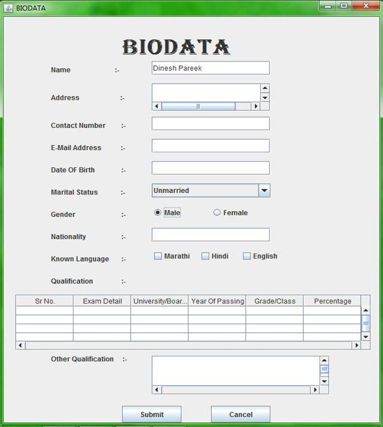

MY FAMILY
form
myself
PLAYROLL
MY BIO DETA
My Bio Deta is a inform a my family my self or my favourite charecter.
Family has always been an important unit of analysis in an effort to improve and understand human developme nt.
To atteched to form bio deta.

Without good career planning, right from the start, one can’t be on the right track. One has to set the goals in accordance with his or her broad career goals.

This is my charecter roll in political your to bharat pm my favourite person.

go to top